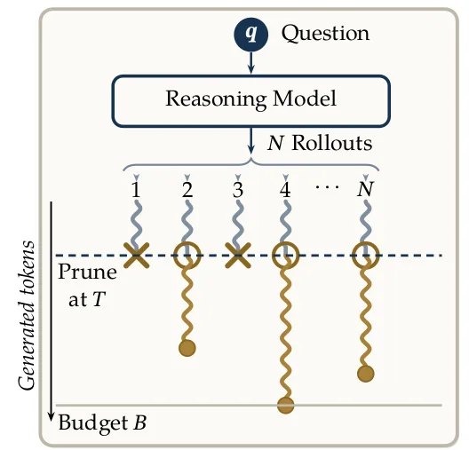
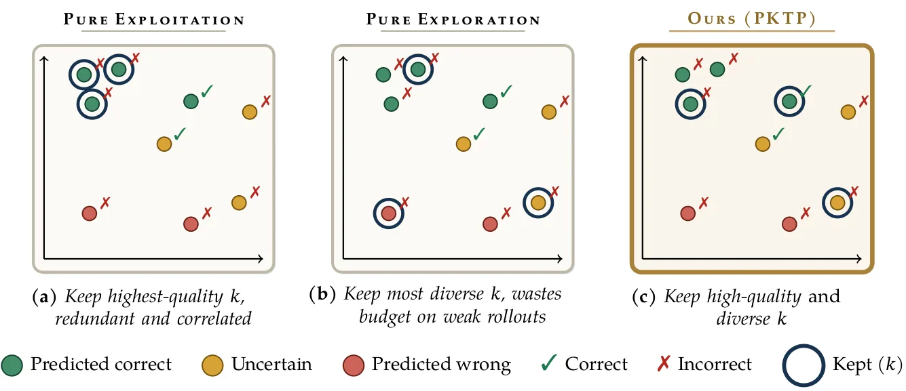
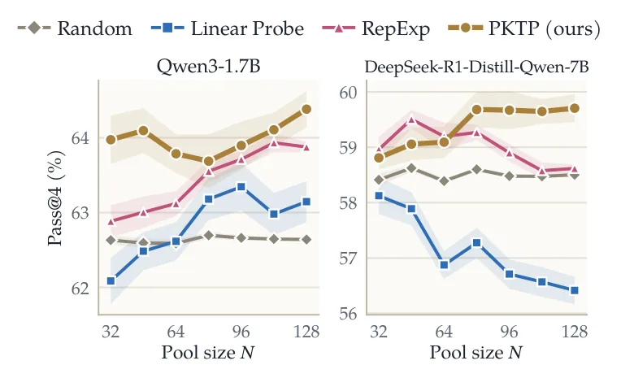
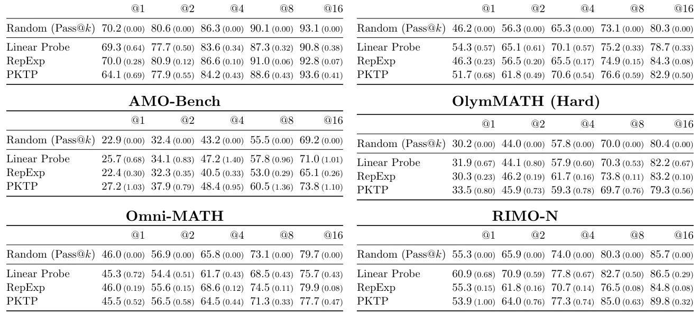

O Custo da Poda de Raciocínio em Tempo de Inferência
Os Modelos de Linguagem de Grande Escala (LLMs) têm demonstrado capacidades notáveis em raciocínio complexo, mas alcançar o melhor desempenho frequentemente exige gerar múltiplas soluções candidatas para um único problema. Essa estratégia, conhecida como test-time scaling, permite que o modelo explore diferentes trajetórias de raciocínio. No entanto, gerar todas as soluções até o final (rollouts completos) é computacionalmente proibitivo. A poda de rollouts em tempo de teste surge como uma solução para esse gargalo: o modelo gera várias soluções parciais até um ponto de corte de tokens, seleciona um subconjunto promissor e continua a geração apenas para esses candidatos restantes.
As estratégias de poda existentes se dividem em duas categorias principais. As baseadas em qualidade atribuem uma pontuação a cada solução parcial e descartam aquelas previstas como incorretas. As baseadas em diversidade selecionam soluções que seguem trajetórias de raciocínio distintas, cobrindo um espaço de soluções mais amplo. O problema é que essas abordagens operam em extremos opostos do espectro exploração versus exploração. Métodos de qualidade pura tendem a manter rollouts semelhantes, arriscando que todos falhem juntos. Já os métodos de diversidade pura podem desperdiçar recursos em soluções de baixa qualidade.
Neste artigo, os autores da Universidade da Califórnia do Sul (USC) apresentam o PKTP (Pass@k Thought Pruning), um framework que aborda essa tensão diretamente. Em vez de otimizar qualidade ou diversidade separadamente, o PKTP otimiza o Pass@k sobre o pool selecionado. O objetivo é maximizar a probabilidade de que pelo menos uma das soluções parciais selecionadas, quando continuada até o fim, produza a resposta correta. Isso equilibra naturalmente a necessidade de soluções de alta qualidade e a necessidade de diversidade para evitar falhas compartilhadas.

A Tensão entre Qualidade e Diversidade
Para entender a motivação do PKTP, é crucial observar as limitações das abordagens anteriores. Métodos baseados em sondagem (probing) usam o estado interno do modelo para prever a correção final. Embora eficientes, esses métodos tendem a ranquear rollouts que são altamente similares entre si. Se a sonda estiver errada, todos os rollouts mantidos falham simultaneamente. Por outro lado, métodos de exploração de representação (RepExp) selecionam rollouts com embeddings dissimilares para maximizar a diversidade. Isso pode levar a uma seleção de soluções que, embora diversas, têm baixa probabilidade de sucesso.
O PKTP propõe uma mudança de paradigma: em vez de usar métricas proxy, ele otimiza diretamente a métrica que nos importa, o Pass@k. O Pass@k é a probabilidade de que pelo menos uma das k soluções geradas esteja correta. Ao maximizar o Pass@k estimado do pool selecionado, o método incentiva a escolha de soluções que são individualmente promissoras (qualidade) e, ao mesmo tempo, penaliza a redundância entre elas (diversidade). Isso ocorre porque soluções redundantes não aumentam significativamente a probabilidade de sucesso coletivo, enquanto soluções diversas e de alta qualidade o fazem.

Modelagem Probabilística das Correlações
O cerne do PKTP é a estimativa do Pass@k para um conjunto de rollouts. O principal desafio é que a correção de um rollout não é independente; rollouts com representações semelhantes tendem a ter resultados correlacionados. O PKTP modela isso usando um modelo probabilístico latente. Para cada rollout, define-se uma pontuação latente Zi, composta pela qualidade prevista Qθ(hi), um efeito aleatório compartilhado hi⊤f para rollouts com representações similares, e um ruído específico mi.
A correção Ci é determinada pela sinalização dessa pontuação latente: se Zi ≥ 0, o rollout é considerado correto. A probabilidade conjunta de um padrão de resultados observado é calculada integrando sobre o efeito aleatório f. Como essa integral não tem forma fechada, os autores utilizam uma expansão de segunda ordem para aproximar a verossimilhança de forma tratável. Essa aproximação permite calcular a probabilidade de qualquer configuração de resultados corretos/errados de forma eficiente e diferenciável.
Treinamento e Seleção Grelily
O componente de qualidade Qθ é treinado para maximizar a verossimilhança dos resultados observados em um conjunto de treinamento. Diferentemente de sondagens lineares tradicionais que avaliam cada rollout isoladamente, o Qθ é treinado considerando os resultados conjuntos de todos os rollouts de um problema. Isso permite que a qualidade aprendida já incorpore as correlações entre os rollouts. O modelo Qθ é simples (linear) para evitar overfitting com dados limitados.
Uma vez treinado o modelo, a seleção dos k rollouts a serem mantidos é formulada como um programa misto-inteiro. Para tornar isso viável, o PKTP usa uma abordagem gulosa (greedy) com uma garantia de aproximação para o objetivo surrogado. O algoritmo seleciona iterativamente o rollout que mais aumenta o Pass@k estimado do pool, considerando as correlações aprendidas. Isso garante que o conjunto final equilibre qualidade e diversidade de forma otimizada.
Avaliação Experimental
O PKTP foi avaliado em oito modelos de raciocínio de peso aberto, divididos em dois tamanhos: pequeno (0.6B a 1.7B parâmetros) e grande (7B a 8B parâmetros). Os modelos incluíam variações do Qwen3, OpenMath-Nemotron, DeepSeek-R1-Distill-Qwen e Skywork-OR1-Math. Os benchmarks utilizados foram AIME, HMMT, RIMO-N, BeyondAIME, OlymMATH e Omni-MATH, cobrindo problemas de matemática e lógica complexa.
A avaliação foi realizada com validação cruzada de 8 dobras, com 20 repetições para cada configuração. Isso garante que a avaliação seja robusta e não dependa de uma única divisão dos dados. Para cada problema, o modelo gera N rollouts parciais, o PKTP seleciona k rollouts, e esses são completados até o orçamento de tokens. A correção é verificada por um juiz baseado em LLM (Qwen3-32B), que compara a resposta final com a referência.

Resultados e Análise
Os resultados mostram que o PKTP supera consistentemente as abordagens baseadas em qualidade (Linear Probe) e diversidade (RepExp) em todos os modelos e benchmarks testados. O ganho é particularmente pronunciado quando o número de rollouts mantidos k é moderado. Nesses casos, os métodos baseados em qualidade falham por manter rollouts redundantes, enquanto os baseados em diversidade falham por manter rollouts de baixa qualidade. O PKTP, ao otimizar o Pass@k, evita ambos os extremos.
Em modelos menores, como o Qwen3-0.6B, o PKTP demonstra ganhos significativos sobre a poda aleatória e as abordagens existentes. Em modelos maiores, como o Qwen3-8B, a vantagem persiste, especialmente em benchmarks desafiadores como AIME e HMMT. A figura 7 ilustra como o PKTP lidera à medida que o tamanho do pool N aumenta, enquanto o Linear Probe tende a decair devido à redundância crescente.

Limitações e Direções Futuras
Apesar dos resultados promissores, o PKTP tem limitações. A qualidade do método depende da representação das soluções parciais. Se a representação não capturar adequadamente a correção ou a diversidade do raciocínio, o desempenho do PKTP será comprometido. O uso de embeddings de estados ocultos (EMA) mostrou-se eficaz, mas representações mais sofisticadas poderiam melhorar ainda mais os resultados.
Além disso, o treinamento do modelo probabilístico requer dados de treinamento. Embora o PKTP possa ser aplicado a qualquer modelo, a eficácia da seleção depende da qualidade do modelo Qθ treinado. Em cenários com dados de treinamento muito limitados, a generalização do modelo de correlação pode ser desafiadora. Futuros trabalhos podem explorar representações mais ricas e métodos de treinamento mais eficientes para ampliar o escopo de aplicação do PKTP.
Conclusão
O PKTP representa um avanço significativo na otimização de raciocínio em tempo de teste. Ao otimizar diretamente o Pass@k, ele equilibra qualidade e diversidade de forma natural, superando abordagens heurísticas. Os resultados em múltiplos modelos e benchmarks demonstram a eficácia do método, especialmente em cenários com recursos computacionais limitados. O PKTP oferece um caminho viável para escalar o raciocínio de LLMs sem custos proibitivos, tornando-se uma ferramenta valiosa para aplicações práticas de IA.
O que fica
- O PKTP otimiza diretamente o Pass@k, equilibrando qualidade e diversidade sem heurísticas ad-hoc.
- Modelos probabilísticos capturam correlações entre rollouts, evitando falhas compartilhadas.
- Ganhos significativos em modelos abertos, especialmente com pools moderados de soluções.
- A poda reduz custos computacionais mantendo a probabilidade de sucesso do modelo.
Paper original: Direct Pass@$k$ Optimization for Thought Pruning: Balancing Quality and Diversity in Test-Time Reasoning
Comentários
Nenhum comentário ainda. Seja o primeiro.